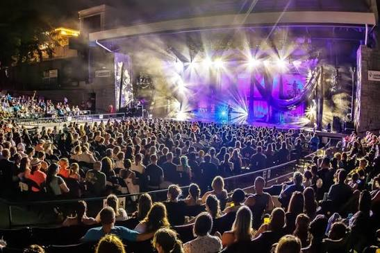

Why I Like Concerts
I have attended so many concerts since my first one in 2018 and throughout the years I have always enjoyed each and every one even if I have seen some artist multiple times. One of the reasons I have enjoyed going to concerts is because they allow me to forget the outside world just for a day. I get to leave all my worries at my house and once I get to the concert I get to live in the moment and enjoy the music live. Getting to experience live music is something everyone should get to do once in their life. When going to concerts I get to let loose and just enjoy the music whether it is slow or hyped. There is just something in the air when you hear your favorite song live and get to sing the lyrics with the artist and a bunch of other people around you knowing the lyrics as well, all sharing the same moment together.
One of the things I enjoy at concerts or at least I have experienced with the ones I have been to is that they give out “freebies” which are usually made by the fans. Freebies usually can be bracelets, little goodie bags with candy or can be like little photos of the artist, it all varies. But I have enjoyed receiving these when going to many different concerts, specifically Kpop concerts which is where you will most likely see them. I have built a collection of what I have received throughout the years and are very precious to me. I think concert culture is very much a thing and it is exciting getting to a concert, getting in line, receiving freebies, and getting to know new people and just bonding over the music.
I also love to bring loved ones to concerts with me especially when the artist so much to me. I really resonate with music, so when it comes to seeing my favorite artist I take it seriously. I have taken my mom with me to concerts. After the first one I have taken her she always asks when the next one is. I appreciate that she takes time to spend time with me and experience the music live and just get to live in the moment together. This also applies to going with friends. Getting to go to concerts with someone is special and having the opportunity to be together when listening and seeing the artist performs is just another type of special bond. I say everyone should go to a concert even if they don’t know the lyrics but to just enjoy the live music and live in the moment!